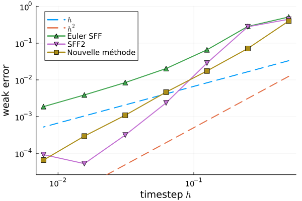

Qui suis-je ?
Je m'appelle Sébastien Macé et je suis doctorant sous la
direction de
Adrien Busnot Laurent
et
Nicolas Crouseilles.
J'appartiens à l'équipe
MINGuS
de l'INRIA Rennes.
Mes sujets de recherche:
- Méthodes numériques pour les équation différentielle stochastique,
- Intégration numérique et géométrique,
- Structures algébriques en analyse numérique,
- Mathématiques appliquées à la biologie,
- Les mathématiques en général!
Dynamique sur variété
Soit \((\mathcal{M}, g)\) une variété riemannienne lisse, complète et
connexe munie d'une métrique \(g\).
Soient \(E_1, \dots, E_D\) un repère de \(\mathcal{M}\).
Pour un champ de vecteurs tangents lisse et lipschitz \(F : x \mapsto
\underset{d=1}{\overset{D}{\sum}} f^d(x) E_d(x)\), on considère l’équation différentielle
stochastique (de Stratonovich) sur \(\mathcal{M}\) :
\[ dX(t) = F(X(t))\,dt + \sqrt{2} \underset{d=1}{\overset{D}{\sum}} E_d(X(t)) \circ dW_d(t) \]
Mon théorème
La méthode numérique intrinsèque et consistante suivante :
est d'ordre faible 1 et d'ordre 2 pour la mesure invariante.
